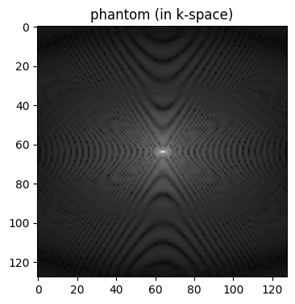
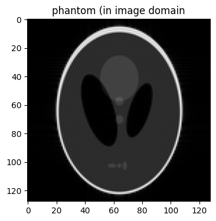

<!DOCTYPE html>


<html lang="en" data-content_root="./" >

  <head>
    <meta charset="utf-8" />
    <meta name="viewport" content="width=device-width, initial-scale=1.0" /><meta name="viewport" content="width=device-width, initial-scale=1" />

    <title>BART BITMASK &#8212; BART Documentation</title>
  
  
  
  <script data-cfasync="false">
    document.documentElement.dataset.mode = localStorage.getItem("mode") || "";
    document.documentElement.dataset.theme = localStorage.getItem("theme") || "";
  </script>
  <!-- 
    this give us a css class that will be invisible only if js is disabled 
  -->
  <noscript>
    <style>
      .pst-js-only { display: none !important; }

    </style>
  </noscript>
  
  <!-- Loaded before other Sphinx assets -->
  <link href="_static/styles/theme.css?digest=26a4bc78f4c0ddb94549" rel="stylesheet" />
<link href="_static/styles/pydata-sphinx-theme.css?digest=26a4bc78f4c0ddb94549" rel="stylesheet" />

    <link rel="stylesheet" type="text/css" href="_static/pygments.css?v=fa44fd50" />
    <link rel="stylesheet" type="text/css" href="_static/styles/sphinx-book-theme.css?v=a3416100" />
    <link rel="stylesheet" type="text/css" href="_static/togglebutton.css?v=13237357" />
    <link rel="stylesheet" type="text/css" href="_static/copybutton.css?v=76b2166b" />
    <link rel="stylesheet" type="text/css" href="_static/mystnb.4510f1fc1dee50b3e5859aac5469c37c29e427902b24a333a5f9fcb2f0b3ac41.css?v=be8a1c11" />
    <link rel="stylesheet" type="text/css" href="_static/sphinx-thebe.css?v=4fa983c6" />
    <link rel="stylesheet" type="text/css" href="_static/sphinx-design.min.css?v=95c83b7e" />
    <link rel="stylesheet" type="text/css" href="_static/styles.css" />
  
  <!-- So that users can add custom icons -->
  <script src="_static/scripts/fontawesome.js?digest=26a4bc78f4c0ddb94549"></script>
  <!-- Pre-loaded scripts that we'll load fully later -->
  <link rel="preload" as="script" href="_static/scripts/bootstrap.js?digest=26a4bc78f4c0ddb94549" />
<link rel="preload" as="script" href="_static/scripts/pydata-sphinx-theme.js?digest=26a4bc78f4c0ddb94549" />

    <script src="_static/documentation_options.js?v=9eb32ce0"></script>
    <script src="_static/doctools.js?v=9a2dae69"></script>
    <script src="_static/sphinx_highlight.js?v=dc90522c"></script>
    <script src="_static/clipboard.min.js?v=a7894cd8"></script>
    <script src="_static/copybutton.js?v=f281be69"></script>
    <script src="_static/scripts/sphinx-book-theme.js?v=887ef09a"></script>
    <script>let toggleHintShow = 'Click to show';</script>
    <script>let toggleHintHide = 'Click to hide';</script>
    <script>let toggleOpenOnPrint = 'true';</script>
    <script src="_static/togglebutton.js?v=4a39c7ea"></script>
    <script>var togglebuttonSelector = '.toggle, .admonition.dropdown';</script>
    <script src="_static/design-tabs.js?v=f930bc37"></script>
    <script>const THEBE_JS_URL = "https://unpkg.com/thebe@0.8.2/lib/index.js"; const thebe_selector = ".thebe,.cell"; const thebe_selector_input = "pre"; const thebe_selector_output = ".output, .cell_output"</script>
    <script async="async" src="_static/sphinx-thebe.js?v=c100c467"></script>
    <script>var togglebuttonSelector = '.toggle, .admonition.dropdown';</script>
    <script>const THEBE_JS_URL = "https://unpkg.com/thebe@0.8.2/lib/index.js"; const thebe_selector = ".thebe,.cell"; const thebe_selector_input = "pre"; const thebe_selector_output = ".output, .cell_output"</script>
    <script>window.MathJax = {"options": {"processHtmlClass": "tex2jax_process|mathjax_process|math|output_area"}}</script>
    <script defer="defer" src="https://cdn.jsdelivr.net/npm/mathjax@3/es5/tex-mml-chtml.js"></script>
    <script>DOCUMENTATION_OPTIONS.pagename = 'bitmask';</script>
    <link rel="index" title="Index" href="genindex.html" />
    <link rel="search" title="Search" href="search.html" />
    <link rel="next" title="BART CALDIR" href="caldir.html" />
    <link rel="prev" title="bart vec" href="vec.html" />
  <meta name="viewport" content="width=device-width, initial-scale=1"/>
  <meta name="docsearch:language" content="en"/>
  <meta name="docsearch:version" content="" />
  </head>
  
  
  <body data-bs-spy="scroll" data-bs-target=".bd-toc-nav" data-offset="180" data-bs-root-margin="0px 0px -60%" data-default-mode="">

  
  
  <div id="pst-skip-link" class="skip-link d-print-none"><a href="#main-content">Skip to main content</a></div>
  
  <div id="pst-scroll-pixel-helper"></div>
  
  <button type="button" class="btn rounded-pill" id="pst-back-to-top">
    <i class="fa-solid fa-arrow-up"></i>Back to top</button>

  
  <dialog id="pst-search-dialog">
    
<form class="bd-search d-flex align-items-center"
      action="search.html"
      method="get">
  <i class="fa-solid fa-magnifying-glass"></i>
  <input type="search"
         class="form-control"
         name="q"
         placeholder="Search this book..."
         aria-label="Search this book..."
         autocomplete="off"
         autocorrect="off"
         autocapitalize="off"
         spellcheck="false"/>
  <span class="search-button__kbd-shortcut"><kbd class="kbd-shortcut__modifier">Ctrl</kbd>+<kbd>K</kbd></span>
</form>
  </dialog>

  <div class="pst-async-banner-revealer d-none">
  <aside id="bd-header-version-warning" class="d-none d-print-none" aria-label="Version warning"></aside>
</div>

  
    <header class="bd-header navbar navbar-expand-lg bd-navbar d-print-none">
    </header>
  

  <div class="bd-container">
    <div class="bd-container__inner bd-page-width">
      
      
      
      <dialog id="pst-primary-sidebar-modal"></dialog>
      <div id="pst-primary-sidebar" class="bd-sidebar-primary bd-sidebar">
        

  
  <div class="sidebar-header-items sidebar-primary__section">
    
    
    
    
  </div>
  
    <div class="sidebar-primary-items__start sidebar-primary__section">
        <div class="sidebar-primary-item">

  
    
  

<a class="navbar-brand logo" href="index.html">
  
  
  
  
  
    
    
      
    
    
    
    
  
  
</a></div>
        <div class="sidebar-primary-item">

<button class="btn search-button-field search-button__button pst-js-only" title="Search" aria-label="Search" data-bs-placement="bottom" data-bs-toggle="tooltip">
 <i class="fa-solid fa-magnifying-glass"></i>
 <span class="search-button__default-text">Search</span>
 <span class="search-button__kbd-shortcut"><kbd class="kbd-shortcut__modifier">Ctrl</kbd>+<kbd class="kbd-shortcut__modifier">K</kbd></span>
</button></div>
        <div class="sidebar-primary-item"><nav class="bd-links bd-docs-nav" aria-label="Main">
    <div class="bd-toc-item navbar-nav active">
        
        <ul class="nav bd-sidenav bd-sidenav__home-link">
            <li class="toctree-l1">
                <a class="reference internal" href="index.html">
                    Table of Contents
                </a>
            </li>
        </ul>
        <ul class="current nav bd-sidenav">
<li class="toctree-l1"><a class="reference internal" href="intro.html">Introduction</a></li>
<li class="toctree-l1"><a class="reference internal" href="install.html">Installation</a></li>
<li class="toctree-l1"><a class="reference internal" href="data.html">Data Format</a></li>
<li class="toctree-l1"><a class="reference internal" href="interface.html">Tool Interfaces</a></li>
<li class="toctree-l1 current active has-children"><a class="reference internal" href="tools.html">Tools</a><details open="open"><summary><span class="toctree-toggle" role="presentation"><i class="fa-solid fa-chevron-down"></i></span></summary><ul class="current">
<li class="toctree-l2"><a class="reference internal" href="reshape.html">BART RESHAPE</a></li>
<li class="toctree-l2"><a class="reference internal" href="ones.html">BART ONES</a></li>
<li class="toctree-l2"><a class="reference internal" href="avg.html"><code class="docutils literal notranslate"><span class="pre">bart</span> <span class="pre">avg</span></code></a></li>
<li class="toctree-l2"><a class="reference internal" href="rss.html">BART RSS</a></li>
<li class="toctree-l2"><a class="reference internal" href="vec.html"><code class="docutils literal notranslate"><span class="pre">bart</span> <span class="pre">vec</span></code></a></li>
<li class="toctree-l2 current active"><a class="current reference internal" href="#">BART BITMASK</a></li>

<li class="toctree-l2"><a class="reference internal" href="caldir.html">BART CALDIR</a></li>
<li class="toctree-l2"><a class="reference internal" href="cdf97.html">BART CDF97</a></li>
<li class="toctree-l2"><a class="reference internal" href="flatten.html">BART FLATTEN</a></li>
<li class="toctree-l2"><a class="reference internal" href="phantom.html">BART PHANTOM</a></li>
<li class="toctree-l2"><a class="reference internal" href="squeeze.html">BART SQUEEZE</a></li>
<li class="toctree-l2"><a class="reference internal" href="zeros.html">BART ZEROS</a></li>
</ul>
</details></li>
<li class="toctree-l1"><a class="reference internal" href="viewer.html">Viewers</a></li>
<li class="toctree-l1 has-children"><a class="reference internal" href="api.html">Developer API</a><details><summary><span class="toctree-toggle" role="presentation"><i class="fa-solid fa-chevron-down"></i></span></summary><ul>
<li class="toctree-l2"><a class="reference internal" href="iter.html">Iterative Algorithms</a></li>
<li class="toctree-l2"><a class="reference internal" href="linops.html">Linear Operators</a></li>
<li class="toctree-l2"><a class="reference internal" href="prox.html">Proximal Operators</a></li>
</ul>
</details></li>
<li class="toctree-l1"><a class="reference internal" href="impl.html">Software Implementation</a></li>
<li class="toctree-l1"><a class="reference internal" href="utest.html">Unit Tests</a></li>
</ul>

    </div>
</nav></div>
    </div>
  
  
  <div class="sidebar-primary-items__end sidebar-primary__section">
  </div>
  
  <div id="rtd-footer-container"></div>


      </div>
      
      <main id="main-content" class="bd-main" role="main">
        
        

<div class="sbt-scroll-pixel-helper"></div>

          <div class="bd-content">
            <div class="bd-article-container">
              
              <div class="bd-header-article d-print-none">
<div class="header-article-items header-article__inner">
  
    <div class="header-article-items__start">
      
        <div class="header-article-item"><button class="sidebar-toggle primary-toggle btn btn-sm" title="Toggle primary sidebar" data-bs-placement="bottom" data-bs-toggle="tooltip">
  <span class="fa-solid fa-bars"></span>
</button></div>
      
    </div>
  
  
    <div class="header-article-items__end">
      
        <div class="header-article-item">

<div class="article-header-buttons">


<div class="dropdown dropdown-source-buttons">
  <button class="btn dropdown-toggle" type="button" data-bs-toggle="dropdown" aria-expanded="false" aria-label="Source repositories">
    <i class="fab fa-github"></i>
  </button>
  <ul class="dropdown-menu">
      
      
      
      <li><a href="https://github.com/executablebooks/jupyter-book" target="_blank"
   class="btn btn-sm btn-source-repository-button dropdown-item"
   title="Source repository"
   data-bs-placement="left" data-bs-toggle="tooltip"
>
  

<span class="btn__icon-container">
  <i class="fab fa-github"></i>
  </span>
<span class="btn__text-container">Repository</span>
</a>
</li>
      
      
      
      
      <li><a href="https://github.com/executablebooks/jupyter-book/issues/new?title=Issue%20on%20page%20%2Fbitmask.html&body=Your%20issue%20content%20here." target="_blank"
   class="btn btn-sm btn-source-issues-button dropdown-item"
   title="Open an issue"
   data-bs-placement="left" data-bs-toggle="tooltip"
>
  

<span class="btn__icon-container">
  <i class="fas fa-lightbulb"></i>
  </span>
<span class="btn__text-container">Open issue</span>
</a>
</li>
      
  </ul>
</div>


<div class="dropdown dropdown-download-buttons">
  <button class="btn dropdown-toggle" type="button" data-bs-toggle="dropdown" aria-expanded="false" aria-label="Download this page">
    <i class="fas fa-download"></i>
  </button>
  <ul class="dropdown-menu">
      
      
      
      <li><a href="_sources/bitmask.ipynb" target="_blank"
   class="btn btn-sm btn-download-source-button dropdown-item"
   title="Download source file"
   data-bs-placement="left" data-bs-toggle="tooltip"
>
  

<span class="btn__icon-container">
  <i class="fas fa-file"></i>
  </span>
<span class="btn__text-container">.ipynb</span>
</a>
</li>
      
      
      
      
      <li>
<button onclick="window.print()"
  class="btn btn-sm btn-download-pdf-button dropdown-item"
  title="Print to PDF"
  data-bs-placement="left" data-bs-toggle="tooltip"
>
  

<span class="btn__icon-container">
  <i class="fas fa-file-pdf"></i>
  </span>
<span class="btn__text-container">.pdf</span>
</button>
</li>
      
  </ul>
</div>


<button onclick="toggleFullScreen()"
  class="btn btn-sm btn-fullscreen-button"
  title="Fullscreen mode"
  data-bs-placement="bottom" data-bs-toggle="tooltip"
>
  

<span class="btn__icon-container">
  <i class="fas fa-expand"></i>
  </span>

</button>


<button class="btn btn-sm nav-link pst-navbar-icon theme-switch-button pst-js-only" aria-label="Color mode" data-bs-title="Color mode"  data-bs-placement="bottom" data-bs-toggle="tooltip">
  <i class="theme-switch fa-solid fa-sun                fa-lg" data-mode="light" title="Light"></i>
  <i class="theme-switch fa-solid fa-moon               fa-lg" data-mode="dark"  title="Dark"></i>
  <i class="theme-switch fa-solid fa-circle-half-stroke fa-lg" data-mode="auto"  title="System Settings"></i>
</button>


<button class="btn btn-sm pst-navbar-icon search-button search-button__button pst-js-only" title="Search" aria-label="Search" data-bs-placement="bottom" data-bs-toggle="tooltip">
    <i class="fa-solid fa-magnifying-glass fa-lg"></i>
</button>
<button class="sidebar-toggle secondary-toggle btn btn-sm" title="Toggle secondary sidebar" data-bs-placement="bottom" data-bs-toggle="tooltip">
    <span class="fa-solid fa-list"></span>
</button>
</div></div>
      
    </div>
  
</div>
</div>
              
              

<div id="jb-print-docs-body" class="onlyprint">
    <h1>BART BITMASK</h1>
    <!-- Table of contents -->
    <div id="print-main-content">
        <div id="jb-print-toc">
            
            <div>
                <h2> Contents </h2>
            </div>
            <nav aria-label="Page">
                <ul class="visible nav section-nav flex-column">
<li class="toc-h1 nav-item toc-entry"><a class="reference internal nav-link" href="#">BART BITMASK</a></li>
<li class="toc-h1 nav-item toc-entry"><a class="reference internal nav-link" href="#how-bart-bitmask-works">How <code class="docutils literal notranslate"><span class="pre">bart</span> <span class="pre">bitmask</span></code> Works</a><ul class="visible nav section-nav flex-column">
<li class="toc-h2 nav-item toc-entry"><a class="reference internal nav-link" href="#bit-representation">1. Bit Representation</a></li>
<li class="toc-h2 nav-item toc-entry"><a class="reference internal nav-link" href="#creating-a-bitmask">2. Creating a Bitmask</a></li>
<li class="toc-h2 nav-item toc-entry"><a class="reference internal nav-link" href="#example-1-creating-a-bitmask-for-a-single-dimension-using-bash">Example 1: Creating a Bitmask for a Single Dimension (using Bash)</a></li>
<li class="toc-h2 nav-item toc-entry"><a class="reference internal nav-link" href="#example-2-creating-a-bitmask-for-multiple-dimensions-using-bash">Example 2: Creating a Bitmask for Multiple Dimensions (using Bash)</a></li>
<li class="toc-h2 nav-item toc-entry"><a class="reference internal nav-link" href="#example-3-convert-dimensions-from-a-bitmask-using-bash">Example 3: Convert Dimensions from a Bitmask (using Bash)</a></li>
<li class="toc-h2 nav-item toc-entry"><a class="reference internal nav-link" href="#example-4-using-the-output-of-bitmask-directly-with-another-tool">Example 4: Using the output of bitmask directly with another tool</a></li>
</ul>
</li>
</ul>

            </nav>
        </div>
    </div>
</div>

              
                
<div id="searchbox"></div>
                <article class="bd-article">
                  
  <section class="tex2jax_ignore mathjax_ignore" id="bart-bitmask">
<h1>BART BITMASK<a class="headerlink" href="#bart-bitmask" title="Link to this heading">#</a></h1>
<p>=================================================================================================================</p>
<p>The <code class="docutils literal notranslate"><span class="pre">bart</span> <span class="pre">bitmask</span></code> command is a utility for creating and manipulating <strong>bitmasks</strong>. BART uses bitmasks to indicate which dimensions of a multi-dimensional array an operation should be applied to. Each bit in the bitmask corresponds to a dimension in the array.</p>
<p>Bitmasks are frequently used in MRI to select specific dimensions or channels, enabling flexible data selection and manipulation.</p>
<p>Where we can view the full usage string and optional arguments with the <code class="docutils literal notranslate"><span class="pre">-h</span></code> flag.</p>
</section>
<section class="tex2jax_ignore mathjax_ignore" id="how-bart-bitmask-works">
<h1>How <code class="docutils literal notranslate"><span class="pre">bart</span> <span class="pre">bitmask</span></code> Works<a class="headerlink" href="#how-bart-bitmask-works" title="Link to this heading">#</a></h1>
<section id="bit-representation">
<h2>1. Bit Representation<a class="headerlink" href="#bit-representation" title="Link to this heading">#</a></h2>
<p>Each position in a binary number (bit) corresponds to a power of 2, representing a specific dimension or feature. For instance, dimension ( d ) corresponds to ( 2^d ). Examples:</p>
<ul class="simple">
<li><p>Dimension 0 corresponds to ( 2^0 = 1 ): <code class="docutils literal notranslate"><span class="pre">0001</span></code></p></li>
<li><p>Dimension 1 corresponds to ( 2^1 = 2 ): <code class="docutils literal notranslate"><span class="pre">0010</span></code></p></li>
<li><p>Dimension 2 corresponds to ( 2^2 = 4 ): <code class="docutils literal notranslate"><span class="pre">0100</span></code></p></li>
<li><p>Dimension 3 corresponds to ( 2^3 = 8 ): <code class="docutils literal notranslate"><span class="pre">1000</span></code></p></li>
</ul>
</section>
<section id="creating-a-bitmask">
<h2>2. Creating a Bitmask<a class="headerlink" href="#creating-a-bitmask" title="Link to this heading">#</a></h2>
<p>To create a bitmask representing multiple dimensions, use <strong>bitmask</strong> to combine the individual bits. For example, to select dimensions 1 and 3:</p>
<div class="math notranslate nohighlight">
\[{Bitmask} = 2^1 + 2^3 = 2 + 8 = 10\]</div>
<div class="cell docutils container">
<div class="cell_input docutils container">
<div class="highlight-ipython3 notranslate"><div class="highlight"><pre><span></span><span class="o">!</span>bart<span class="w"> </span>bitmask<span class="w"> </span>-h
</pre></div>
</div>
</div>
<div class="cell_output docutils container">
<div class="output stream highlight-myst-ansi notranslate"><div class="highlight"><pre><span></span>Usage: bitmask [-b] [dim1 ... dimN ] 

Convert between a bitmask and set of dimensions.

-b    dimensions from bitmask, use with exactly one argument
-h    help
</pre></div>
</div>
</div>
</div>
</section>
<section id="example-1-creating-a-bitmask-for-a-single-dimension-using-bash">
<h2>Example 1: Creating a Bitmask for a Single Dimension (using Bash)<a class="headerlink" href="#example-1-creating-a-bitmask-for-a-single-dimension-using-bash" title="Link to this heading">#</a></h2>
<p>This example generates a bitmask for dimension 3:</p>
<div class="cell docutils container">
<div class="cell_input docutils container">
<div class="highlight-ipython3 notranslate"><div class="highlight"><pre><span></span><span class="o">!</span>bart<span class="w"> </span>bitmask<span class="w"> </span><span class="m">3</span><span class="w">  </span>#<span class="w"> </span>Outputs<span class="w"> </span>a<span class="w"> </span>bitmask<span class="w"> </span>with<span class="w"> </span>only<span class="w"> </span>the<span class="w"> </span>bit<span class="w"> </span><span class="k">for</span><span class="w"> </span>dimension<span class="w"> </span><span class="m">3</span><span class="w"> </span>set
</pre></div>
</div>
</div>
<div class="cell_output docutils container">
<div class="output stream highlight-myst-ansi notranslate"><div class="highlight"><pre><span></span>8
</pre></div>
</div>
</div>
</div>
</section>
<section id="example-2-creating-a-bitmask-for-multiple-dimensions-using-bash">
<h2>Example 2: Creating a Bitmask for Multiple Dimensions (using Bash)<a class="headerlink" href="#example-2-creating-a-bitmask-for-multiple-dimensions-using-bash" title="Link to this heading">#</a></h2>
<p>A bitmask can represent multiple dimensions by setting bits for each dimension.</p>
<div class="cell docutils container">
<div class="cell_input docutils container">
<div class="highlight-ipython3 notranslate"><div class="highlight"><pre><span></span><span class="o">!</span>bart<span class="w"> </span>bitmask<span class="w"> </span><span class="m">1</span><span class="w"> </span><span class="m">4</span><span class="w">  </span>#<span class="w"> </span>Outputs<span class="w"> </span>a<span class="w"> </span>bitmask<span class="w"> </span>with<span class="w"> </span>bits<span class="w"> </span><span class="nb">set</span><span class="w"> </span><span class="k">for</span><span class="w"> </span>dimensions<span class="w"> </span><span class="m">1</span><span class="w"> </span>and<span class="w"> </span><span class="m">4</span>
</pre></div>
</div>
</div>
<div class="cell_output docutils container">
<div class="output stream highlight-myst-ansi notranslate"><div class="highlight"><pre><span></span>18
</pre></div>
</div>
</div>
</div>
<hr class="docutils" />
</section>
<section id="example-3-convert-dimensions-from-a-bitmask-using-bash">
<h2>Example 3: Convert Dimensions from a Bitmask (using Bash)<a class="headerlink" href="#example-3-convert-dimensions-from-a-bitmask-using-bash" title="Link to this heading">#</a></h2>
<p>Use the <code class="docutils literal notranslate"><span class="pre">bart</span> <span class="pre">bitmask</span></code> command with the <code class="docutils literal notranslate"><span class="pre">-b</span></code> flag</p>
<div class="cell docutils container">
<div class="cell_input docutils container">
<div class="highlight-ipython3 notranslate"><div class="highlight"><pre><span></span><span class="o">!</span>bart<span class="w"> </span>bitmask<span class="w"> </span>-b<span class="w"> </span><span class="m">18</span><span class="w"> </span>#<span class="w"> </span>Outputs<span class="w"> </span>demensions<span class="w"> </span>with<span class="w"> </span>a<span class="w"> </span>bitmask<span class="w"> </span><span class="s1">&#39;18&#39;</span>
</pre></div>
</div>
</div>
<div class="cell_output docutils container">
<div class="output stream highlight-myst-ansi notranslate"><div class="highlight"><pre><span></span>1 4 
</pre></div>
</div>
</div>
</div>
</section>
<section id="example-4-using-the-output-of-bitmask-directly-with-another-tool">
<h2>Example 4: Using the output of bitmask directly with another tool<a class="headerlink" href="#example-4-using-the-output-of-bitmask-directly-with-another-tool" title="Link to this heading">#</a></h2>
<p>It is often useful to pass the output of the bitmask tool directly to another tool in bash. This can be done for example,
to pass the dimensions for FFT without precomputing the corresponding bitmask:</p>
<div class="cell docutils container">
<div class="cell_input docutils container">
<div class="highlight-ipython3 notranslate"><div class="highlight"><pre><span></span><span class="o">!</span>bart<span class="w"> </span>phantom<span class="w"> </span>-x<span class="w"> </span><span class="m">128</span><span class="w"> </span>-k<span class="w"> </span>ksp<span class="w"> </span>#<span class="w"> </span>create<span class="w"> </span>a<span class="w"> </span>phantom<span class="w"> </span><span class="k">in</span><span class="w"> </span>kspace
<span class="o">!</span>bart<span class="w"> </span>show<span class="w"> </span>-m<span class="w"> </span>ksp
<span class="o">!</span>bart<span class="w"> </span>fft<span class="w"> </span>-iu<span class="w"> </span><span class="k">$(</span>bart<span class="w"> </span>bitmask<span class="w"> </span><span class="m">0</span><span class="w"> </span><span class="m">1</span><span class="k">)</span><span class="w"> </span>ksp<span class="w"> </span>img<span class="w"> </span>#<span class="w"> </span>perform<span class="w"> </span>IFFT<span class="w"> </span>along<span class="w"> </span>dimensions<span class="w"> </span><span class="m">0</span><span class="w"> </span>and<span class="w"> </span><span class="m">1</span>
</pre></div>
</div>
</div>
<div class="cell_output docutils container">
<div class="output stream highlight-myst-ansi notranslate"><div class="highlight"><pre><span></span>Type: complex float
Dimensions: 16
AoD:	128	128	1	1	1	1	1	1	1	1	1	1	1	1	1	1
</pre></div>
</div>
</div>
</div>
<div class="cell docutils container">
<div class="cell_input docutils container">
<div class="highlight-ipython3 notranslate"><div class="highlight"><pre><span></span><span class="kn">import</span> <span class="nn">numpy</span> <span class="k">as</span> <span class="nn">np</span>
<span class="kn">import</span> <span class="nn">matplotlib.pyplot</span> <span class="k">as</span> <span class="nn">plt</span>
<span class="kn">import</span> <span class="nn">cfl</span>
<span class="o">%</span><span class="k">matplotlib</span> inline

<span class="n">ksp</span> <span class="o">=</span> <span class="n">cfl</span><span class="o">.</span><span class="n">readcfl</span><span class="p">(</span><span class="s1">&#39;ksp&#39;</span><span class="p">)</span>
<span class="n">img</span> <span class="o">=</span> <span class="n">cfl</span><span class="o">.</span><span class="n">readcfl</span><span class="p">(</span><span class="s1">&#39;img&#39;</span><span class="p">)</span>

<span class="n">plt</span><span class="o">.</span><span class="n">figure</span><span class="p">(</span><span class="n">figsize</span><span class="o">=</span><span class="p">(</span><span class="mi">4</span><span class="p">,</span><span class="mi">6</span><span class="p">))</span>
<span class="n">plt</span><span class="o">.</span><span class="n">imshow</span><span class="p">(</span><span class="nb">abs</span><span class="p">(</span><span class="n">ksp</span><span class="p">)</span><span class="o">**</span><span class="mf">.3</span><span class="p">,</span> <span class="n">cmap</span><span class="o">=</span><span class="s1">&#39;gray&#39;</span><span class="p">)</span>
<span class="n">plt</span><span class="o">.</span><span class="n">title</span><span class="p">(</span><span class="s1">&#39;phantom (in k-space)&#39;</span><span class="p">)</span>

<span class="n">plt</span><span class="o">.</span><span class="n">figure</span><span class="p">(</span><span class="n">figsize</span><span class="o">=</span><span class="p">(</span><span class="mi">4</span><span class="p">,</span><span class="mi">6</span><span class="p">))</span>
<span class="n">plt</span><span class="o">.</span><span class="n">imshow</span><span class="p">(</span><span class="nb">abs</span><span class="p">(</span><span class="n">img</span><span class="p">),</span> <span class="n">cmap</span><span class="o">=</span><span class="s1">&#39;gray&#39;</span><span class="p">)</span>
<span class="n">plt</span><span class="o">.</span><span class="n">title</span><span class="p">(</span><span class="s1">&#39;phantom (in image domain&#39;</span><span class="p">)</span>
</pre></div>
</div>
</div>
<div class="cell_output docutils container">
<div class="output text_plain highlight-myst-ansi notranslate"><div class="highlight"><pre><span></span>Text(0.5, 1.0, &#39;phantom (in image domain&#39;)
</pre></div>
</div>


</div>
</div>
</section>
</section>

    <script type="text/x-thebe-config">
    {
        requestKernel: true,
        binderOptions: {
            repo: "binder-examples/jupyter-stacks-datascience",
            ref: "master",
        },
        codeMirrorConfig: {
            theme: "abcdef",
            mode: "python"
        },
        kernelOptions: {
            name: "python3",
            path: "./."
        },
        predefinedOutput: true
    }
    </script>
    <script>kernelName = 'python3'</script>

                </article>
              

              
              
              
              
                <footer class="prev-next-footer d-print-none">
                  
<div class="prev-next-area">
    <a class="left-prev"
       href="vec.html"
       title="previous page">
      <i class="fa-solid fa-angle-left"></i>
      <div class="prev-next-info">
        <p class="prev-next-subtitle">previous</p>
        <p class="prev-next-title"><code class="docutils literal notranslate"><span class="pre">bart</span> <span class="pre">vec</span></code></p>
      </div>
    </a>
    <a class="right-next"
       href="caldir.html"
       title="next page">
      <div class="prev-next-info">
        <p class="prev-next-subtitle">next</p>
        <p class="prev-next-title">BART CALDIR</p>
      </div>
      <i class="fa-solid fa-angle-right"></i>
    </a>
</div>
                </footer>
              
            </div>
            
            
              
                <dialog id="pst-secondary-sidebar-modal"></dialog>
                <div id="pst-secondary-sidebar" class="bd-sidebar-secondary bd-toc"><div class="sidebar-secondary-items sidebar-secondary__inner">


  <div class="sidebar-secondary-item">
  <div class="page-toc tocsection onthispage">
    <i class="fa-solid fa-list"></i> Contents
  </div>
  <nav class="bd-toc-nav page-toc">
    <ul class="visible nav section-nav flex-column">
<li class="toc-h1 nav-item toc-entry"><a class="reference internal nav-link" href="#">BART BITMASK</a></li>
<li class="toc-h1 nav-item toc-entry"><a class="reference internal nav-link" href="#how-bart-bitmask-works">How <code class="docutils literal notranslate"><span class="pre">bart</span> <span class="pre">bitmask</span></code> Works</a><ul class="visible nav section-nav flex-column">
<li class="toc-h2 nav-item toc-entry"><a class="reference internal nav-link" href="#bit-representation">1. Bit Representation</a></li>
<li class="toc-h2 nav-item toc-entry"><a class="reference internal nav-link" href="#creating-a-bitmask">2. Creating a Bitmask</a></li>
<li class="toc-h2 nav-item toc-entry"><a class="reference internal nav-link" href="#example-1-creating-a-bitmask-for-a-single-dimension-using-bash">Example 1: Creating a Bitmask for a Single Dimension (using Bash)</a></li>
<li class="toc-h2 nav-item toc-entry"><a class="reference internal nav-link" href="#example-2-creating-a-bitmask-for-multiple-dimensions-using-bash">Example 2: Creating a Bitmask for Multiple Dimensions (using Bash)</a></li>
<li class="toc-h2 nav-item toc-entry"><a class="reference internal nav-link" href="#example-3-convert-dimensions-from-a-bitmask-using-bash">Example 3: Convert Dimensions from a Bitmask (using Bash)</a></li>
<li class="toc-h2 nav-item toc-entry"><a class="reference internal nav-link" href="#example-4-using-the-output-of-bitmask-directly-with-another-tool">Example 4: Using the output of bitmask directly with another tool</a></li>
</ul>
</li>
</ul>

  </nav></div>

</div></div>
              
            
          </div>
          <footer class="bd-footer-content">
            
<div class="bd-footer-content__inner container">
  
  <div class="footer-item">
    
  </div>
  
  <div class="footer-item">
    

  <p class="copyright">
    
      © Copyright 2023.
      <br/>
    
  </p>

  </div>
  
  <div class="footer-item">
    
  </div>
  
  <div class="footer-item">
    
  </div>
  
</div>
          </footer>
        

      </main>
    </div>
  </div>
  
  <!-- Scripts loaded after <body> so the DOM is not blocked -->
  <script defer src="_static/scripts/bootstrap.js?digest=26a4bc78f4c0ddb94549"></script>
<script defer src="_static/scripts/pydata-sphinx-theme.js?digest=26a4bc78f4c0ddb94549"></script>

  <footer class="bd-footer">
  </footer>
  </body>
</html>